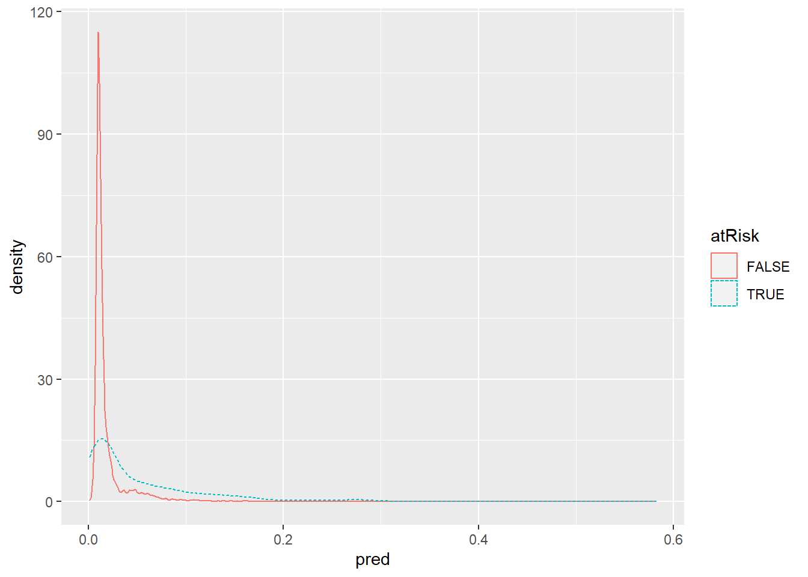

Модели логистической регрессии
Классификация данных
| Современная Терминология | Применяемые алгоритмы |
| Классификации | Дерево принятия решений Байессовские методы Логистическая регрессия (с порогами) Методо опорных веторов |
| Регрессия: численные предска -зания численных значений | Линейная регрессия Логистическая регрессия |
| Правила агрегации: поиск объектов, которые часто встречаются вместе | Априорные |
| Класетризация: поиск групп объектов, которые более схожи между собой, чем между объек- тами в других группах | K-средние |
| Ближайший сосед:предсказываем свойства данных на основе наиболее сходных с ними данных | Метод присоединения соседей |
Тестовая и обучающая выборка
Когда вы строите модель, чтобы делать прогнозы, как наша модель для прогнозирования вероятности медицинского страхования, вам нужны данные для построения модели. Вам также понадобятся данные для проверки того делает ли наша модель верные предсказания на новых данных. Первая выборка называется обучающей, а второй набор называется тестировочным. Обучающий набор данных, это тот который вы “скармливаете” модели, так что алгоритм может установить правильные параметры, чтобы наиболее точно предсказать результат зависимой переменной. Тестовый набор данных, вы используете для “скармливания” результирующей модели, чтобы убедиться, что предсказания модели являются точными.
Многие авторы рекомендуют тестировочное/калибровочное/обучающее разбиение, что тоже хорошо. Мы предлагаем следующее: разбить данные на обучающие/тестировочные в начале, не использовать тестировочные данные до конца моделирования, и если вам нужны калибровочные данные, переразбить их из обучающего подмножества .
Коррелляции при моделировании
Корреляции очень полезно при проверке, являются ли переменные потенциально полезными для модели. Помните, что есть по крайней мере три подхода, которые известны под именем корреляции: Пирсона, Спирмена и Кендалла (см. help(cor)). Пирсона применяют для линейных отношений, Спирмана для ранговых или сильно ненормальных данных. Каждый из этих коэффициентов выполняет все более радикальные преобразования над исходными данными, и имеет хорошо разработанные тесты для оценки точности (см. help(кор.тест)).
НЕ ИСПОЛЬЗУЙТЕ КОЭФФИЦИЕНТ КОРЕЛЛЯЦИИ ДЛЯ ОЦЕНКИ КАЧЕСТВА РЕАЛЬНЫХ МОДЕЛЕЙ
Очень заманчиво использовать корреляцию для оценки качества модели, но мы настоятельно рекомендуем не полагаться исключительно на него. Проблема заключается в следующем: корреляция игнорирует сдвиги и масштаб данных. По сути корелляция показывает, показывает только возможность наличия связи. Вы можете спокойно использовать его для оценок промежуточных моделей(так как эти предсказания, как правило, не имеют систематического смещения или масштабирования по дизайну), но может маскировать систематические ошибки, которые могут возникнуть, когда модель используется в производстве.
ХУДШЕЕ ЧТО МОЖЕТ СЛУЧИТЬСЯ ПРИ МОДЕЛИРОВАНИИ
Самый худший возможный результат моделирования не отсутствие хорошей модели в итоге вашей работы. Самый худший возможный результат моделирования это уверенность в том, что у вас хорошая модель, когда на самом деле она таковой не является. Один из самых простых способов, чтобы нарваться на подобную ситуацию является наличие инструментальной или независимой переменной, являющейся хитрым неочевидным преобразованием зависимой переменной. Такие переменные могут легко просочиться в вашу обучающую выборку, особенно если у вас нет полного представления о природе каждой переменной.
При построении модели, в первую очередь проверьте, работает ли модель на данных, которые были использованы для ее обучени. Введенем количественные меры оценки эффективности модели. С точки зрения оценки , мы таким образом группируем модели по типам .
- Классификация
- Балловая оценка
- Оценка вероятности
- Ранжирование
- Кластеризация
| Нулевая модель | Нулевая модель это лучшая модель в наиболее простой из возможных форм, которую вы пытаетесь превзойти. Два самых простых варианта это модель в виде одной константы (дает всегда один ответ во всех случаях) или полностью независимая модель ( не отмечает важных отношений или взаимодействий между зависимой и независимыми переменными). Нуль модели важны для оценки нижнего предела необходимой производительности, т.е. сравниваем нашу модель с лучшей из возможных нуль моделей Например при категориальном моделировании, нуль модель всегда будет возвращать наиболее популярную категорию (что, очевидно, часто не верно); для оценочных моделей, нулевая модель часто является средним всех зависимых значений ( так как среднее обладает наименьшим квадратом отклонений); и т.д. Идея заключается в том, что если вы не превосходите по точности нулевую модель, вы отказываетесь от своего предсказания (моделью). Стоит отметить, что часто сложно превзойти нулевую модель, т.к. не смотря на свою простоту она уже выбрана исходя из того рапределения, которым обладают данные. Мы всегда исходим из того, что нулевая модель с которой мы проводим сравнения нашей модели лучшая из всех возможных нуль моделей. |
| Байесовские модели | Байесовские модели (часто называемые насыщенными) лучшие возможные модели для имеющихся в данный момент данных. Эти модели явялются идеальными при условии, что не существует разных значениий зависимой переменной при одном и том же значении независимой. Создание Байесовских моделей не всегда практично, но мы будем рассматривать его, как лучший из возможных результатов моделирования. Если вы понимаете, что ваша модель работает значительно лучше нулевой модели и по качеству предсказания приближается к Байесовской, то оптимизацию данной модели можно прекратить. В ситуации обилия данных и малого количества переменных для моделирования, можно рассчитать оценку Байесовской ошибки. Другой способ Байесовской оценки это попросить других аналогично оценить некоторую часть ваших данных, среднее этих оценок можно считать Байесовской оценкой |
Таблица сопряженности
| Предсказание = Отрицательное | Предсказание = Положиетльное | |
| Реальное положение = Гипотеза верна | Истинно отрицательный (TN) | Ложноположительный (FP) |
| Реальное положение = Гипотеза НЕ верна | Ложноотрицательный (FN) | Истинно положительный (TP) |
Таблица метрик качества модели
| Показатель | Формула |
| Аккуратность | (TP+TN)/(TP+FP+TN+FN) |
| Точность | TP/(TP+FP) |
| Чувствительность | TP/(TP+FN) |
| Специфичность | TN/(TN+FP) |
Разъяснение
| Показатель | Типичная бизнесс задача/проблема |
| Accuracy Аккуратность | “Нам необходимо, чтобы большинство наших предсказаний было верно.” Можем ли мы себе позволить ошибиться в 5% случаев ? И является ли для пользователей эквивалентной ситуация, когда спам не отмечен как спам, а часть нормальных писем отмечена |
| Precision Точность | “Большая часть того, что мы отметили как спам точно должно быть спамом”. Показатель гарантирует, что большая часть того, что попало в паку спам, действительно спам, но это далеко не лучший способ оценить какая часть реальных писем была потеряна (отнесена к спаму). Большую часть спама действительно легко распрознать, возможно в реальном бизнесе много важнее будет специфичность |
| Recall Отзыв | “Мы хотим, чтобы доля спама, которая доходит до пользователя не превышала бы 10%. Если 10% спама проходят сквозь фильтр, будет ли пользователь видеть в основном обычные письма или спам? Повлияет ли это на выбор нас пользователями?” |
| Sensitivity Чувств-ность | “Мы должны отфильтровать большую часть спама, иначе пользователь нас не выберет. “Если мы уменьшим долю спама до 1% от текущего уровня, повлияет ли это на выбор ?” |
| Specificity Специф-ть | “Мы должны пропускать 99.9% реальных писем. Потерпит ли пользователь потерю 0,1% от своих писем?” |
Логистическая регрессия
Логистическая регрессия является наиболее важным (и, вероятно, наиболее часто используемым) элементом класса моделей, называемых обобщенными линейными моделями. В отличие от линейной регрессии, логистическая регрессия может непосредственно предсказывать значения, которые ограничены интервалом (0,1), таким как вероятности. Это новый метод предсказания вероятностей или коэффициентов, и, подобно линейной регрессии, коэффициенты модели логистической регрессии можно рассматривать как рекомендации. Это также хороший первый выбор для задач двоичной классификации.
В этом разделе мы будем использовать пример из медицинской классификации (прогнозирующий, потребуется ли новорожденному дополнительное медицинское обслуживание) для проработки всех этапов создания и использования модели логистической регрессии.
Понимая логистическую регрессию
Логистическая регрессия предсказывает вероятность того, что объект принадлежит определенной категории, например, вероятность того, что полет будет задержан. Когда x[i,] представляет собой строку входных данных (например, место и время полета, время года, погода, авиаперевозчик), логистическая регрессия находит фиктивную функцию f(x) такую, что
\[P_{y_{[i]} в классе} \sim f_{(x_{[i,]})} = s(a+b_{[1]} x_{[i,1]} + ... b_{[n]} x_{[i,n]})\]
Здесь s (z) - так называемая сигмоидальная функция, определяемая как \(s(z) = \frac{1}{(1 + exp(z))}\). Если \(y[i]\) - вероятности того, что \(x[i,]\) принадлежат интересующему классу (в нашем примере, вероятность того, что полет с определенными характеристиками будет задержан), тогда задача подгонки состоит в том, чтобы найти \(b[1 ]\), …, \(b[n]\), для которых \(f(x[i,])\) является наилучшей оценкой \(y[i]\).R предоставляет простую команду для поиска этих коэффициентов: glm (). Обратите внимание, что нам не нужно указывать y[i], которые являются оценками вероятности для запуска glm (); Метод обучения требует только y[i], которые говорят, находится ли данный учебный пример в целевом классе.
Сигмоидная функция отображает действительные числа в интервал (0,1) или вероятности. Обратной к сигмоидной является logit функция, которая определяется как \(log(\frac{p}{(1-p)})\), где p - вероятность. Отношение p / (1-p) известно как вероятность(odds), поэтому в нашем примере про полеты logit представляет собой список вероятностей (или логарифмических коэффициентов), того что полет будет задерживаться. Другими словами, вы можете думать о логистической регрессии как линейной регрессии, которая находит логарифмические коэффициенты вероятност интересующего вас события.
В частности, логистическая регрессия предполагает, что logit(y) является линейным к значениям x. Как и линейная регрессия, логистическая регрессия найдет наилучшие коэффициенты для прогнозирования y, включая поиск выгодных комбинаций и исключений переменных из модели, когда часть независимых переменных коррелированы.
В качестве примерного задания, представьте, что вы работаете в больнице. Цель состоит в том, чтобы разработать план снабжения неонатального оборудования для оказания неотложной помощи в родильных отделениях. Новорожденных младенцев оценивают через 1 и 5 минут после рождения, используя так называемый тест «Апгар», который предназначен для определения того, нуждается ли ребенок в неотложной или экстренной медицинской помощи. Ребенку, который получил оценку ниже 7 (по шкале от 0 до 10) по шкале Апгара, требуется дополнительное внимание.
Такого рода дети встречаются довольно редко, поэтому больницам не хочется тратиться на дополнительное аварийно-спасательное оборудование для каждой поставки. С другой стороны, детям в группе риска может понадобиться помощь при этом очень быстро нужно, поэтому превентивная подготовка может спасти жизнь. Целью данного исследования является попытка выявление ситуаций с повышенной вероятностью риска загодя, для того чтобы ресурсы были распределены точно и загодя.
sdata = read.csv("https://www.dropbox.com/s/lx9celfieswn4vq/NatalRisk.csv?dl=1")
head(sdata)## X PWGT UPREVIS CIG_REC GESTREC3 DPLURAL ULD_MECO ULD_PRECIP ULD_BREECH
## 1 2136 155 14 FALSE >= 37 weeks single TRUE FALSE FALSE
## 2 2137 140 13 FALSE >= 37 weeks single FALSE FALSE FALSE
## 3 2138 151 15 FALSE >= 37 weeks single FALSE FALSE FALSE
## 4 2139 118 4 FALSE >= 37 weeks single FALSE FALSE FALSE
## 5 2140 134 11 FALSE >= 37 weeks single FALSE FALSE FALSE
## 6 2141 117 18 FALSE >= 37 weeks single TRUE FALSE FALSE
## URF_DIAB URF_CHYPER URF_PHYPER URF_ECLAM atRisk DBWT ORIGRANDGROUP
## 1 FALSE FALSE FALSE FALSE FALSE 3714 2
## 2 FALSE FALSE FALSE FALSE FALSE 3715 4
## 3 FALSE FALSE FALSE FALSE FALSE 3447 2
## 4 FALSE FALSE FALSE FALSE FALSE 3175 6
## 5 FALSE FALSE FALSE FALSE FALSE 4038 10
## 6 FALSE FALSE FALSE FALSE FALSE 3410 7train <- sdata[sdata$ORIGRANDGROUP<=5,]
test <- sdata[sdata$ORIGRANDGROUP>5,]Командой для построения модели логистической регрессии в R является модель glm(). В нашем случае зависимой переменной Y является логическая (булевая) переменная atRisk; все другие переменные в табл. 7.1 представлены независимыми переменными х. Формула для построения модели для прогнозирования atRisk с помощью этих переменных достаточно длинна для линейной записи; поэтому создадим формулу командами показаными в следующем листинге.
complications <- c("ULD_MECO","ULD_PRECIP","ULD_BREECH")
riskfactors <- c("URF_DIAB", "URF_CHYPER", "URF_PHYPER",
"URF_ECLAM")
y <- "atRisk"
x <- c("PWGT",
"UPREVIS",
"CIG_REC",
"GESTREC3",
"DPLURAL",
complications,
riskfactors)
fmla <- paste(y, paste(x, collapse="+"), sep="~")
model <- glm(fmla, data=train, family=binomial(link="logit"))Параметры функции glm(), family определяет предполагаемое распределение зависимой переменной Y. В нашем случае, мы моделируем Y как биномиальное распределение, это как если бы мы моделировали результаты броски монеты, вероятность выпадения решки которых зависит от x. Параметр “ссылка” - link поясняет функции каким образом привести модель к линейному виду — преобразует Y через преобразованием указанным в параметре link, а затем моделируем полученное значение линейной функции от переменных x. Комбинирование параметров link и family дают широчайший спектр обобщенных линейных моделей (например, Пуассона, или пробит). Здесь мы будем обсуждать только логистические модели.
Создание прогнозов с логистической моделью аналогично прогнозированию с использованием линейной модели - используйте функцию predict ().
train$pred <- predict(model, newdata=train, type="response")
test$pred <- predict(model, newdata=test, type="response")Мы снова сохранили прогнозы для обучающих и тестовых наборов в качестве столбца pred в соответствующих таблицах Обратите внимание на дополнительный тип параметра = “response”(«ответ»). Он сообщает функции predict () возвращать предсказанные вероятности y. Если вы не укажете type = “response”, то по умолчанию функция predict () вернет вывод link функции - logit(y).
Одно из преимуществ логистической регрессии заключается в том, что она сохраняет предельные вероятности данных обучения. Это означает, что если вы суммируете предсказанные вероятности для всей тренировочной подвыборки, это количество будет равно количеству положительных результатов (atRisk == T) в обучающем наборе. Это справедливо также для подмножеств данных, определяемых переменными, включенными в модель. Например, в подмножестве данных обучения, train$GESTREC == “<37 weeks” (ребенок был преждевременным), сумма прогнозируемых вероятностей равна числу положительных примеров обучения.
Если наша цель заключается в использовании модели для классификации новых образцов в одну из двух категорий (в данном случае - риск-группу или не подверженную риску), мы хотим, чтобы модель давала высокие оценки при отнесении в группу и низкие значениям в противном случае. Мы можем проверить, так ли это, построив распределение баллов для положительных и отрицательных случаев. Давайте сделаем это на обучающем наборе (мы также должны построить тестовый набор, чтобы убедиться, что предсказание аналогичного качества).
library(ggplot2)
ggplot(train, aes(x=pred, color=atRisk, linetype=atRisk)) + geom_density()
В идеале мы хотели бы, чтобы распределение баллов было разделено, а оценки отрицательных экземпляров (ЛОЖЬ) должны быть сосредоточены слева, а распределение для положительных экземпляров должно быть сосредоточено справа. В данном случае оба распределения сосредоточены слева, что означает, что как положительные, так и отрицательные случаи оцениваются на низком уровне. Это не удивительно, поскольку положительные случаи (те, в которых ребенок находится в группе риска) редки (около 1,8% от всех родов в наборе данных). Распределение оценок для отрицательных случаев уменьшается раньше, чем распределение для положительных экземпляров. Это означает, что модель выявила субпопуляции в данных, где процент новорожденных с повышенным риском выше среднего.
Чтобы использовать модель в качестве классификатора, вы должны выбрать пороговое значение; Баллы выше порога будут классифицироваться как положительные,а те, что ниже, как отрицательные. Когда вы выбираете пороговое значение, вы пытаетесь сбалансировать точность классификатора (какая доля прогнозируемых положительных результатов являются истинно положительными) и его отзыв (сколько из истинных положительных значений находит классификатор)
Если распределения баллов положительных и отрицательных примеров хорошо разделены, как показано на рисунке, мы можем выбрать соответствующий порог в «долине» между двумя пиками. В данном случае два распределения не очень хорошо разделены, что указывает на то, что модель не может построить классификатор, который одновременно обеспечивает хороший отзыв и хорошую точность.Но мы можем создать классификатор, который идентифицирует подмножество ситуаций с более высоким уровнем рождаемости в группе риска, поэтому предварительное выделение ресурсов для этих ситуаций может быть рекомендовано. Мы будем называть отношение точности классификатора к средней скорости срабатывания коэффициентом обогащения. Чем выше мы устанавливаем порог, тем более точным будет классификатор (мы определим набор ситуаций с гораздо более высоким чем средний уровнем точности определения родов с повышенным риском);одновременно мы также будем чаще пропускать(не классифицировать) ситуации, связанные с риском. При выборе порога мы будем использовать обучающий набор, так как выбор порога является частью построения классификатора.
Затем мы можем использовать тестовый набор для оценки производительности классифицируюшей модели . Чтобы помочь подобрать порог, мы можем использовать график, см ниже, который показывает обвременно обогащение и отзыв как функции от пороговго значения. На рисунке, вы видите, что более высокие пороги приводят к более точной классификации, за счет упущения(неправильной классификации) большого количества случаев; Более низкий порог выявит больше критических ситуаций при родах за счет множества ложных срабатываний. Наилучший компромисс между точностью и отзывом зависит от объема ресурсов, которым располагает больница для распределения и сколько их можно оставить в резерве (или перераспределить) для ситуаций, которые пропустил классификатор. Хорошим выбором может стать порог в 0,02 (что, кстати, и составляет общий показатель рождаемости в группах риска). Получающийся классификатор будет идентифицировать набор потенциальных ситуаций с повышенным риском, который обнаруживают примерно половину всех реальных ситуаций, связанных с риском, с истинным положительным уровнем в 2,5 раза выше, чем в среднем(обнаруживаются такие ситуации).
library(ROCR)
library(ggplot2)
library(gplots)##
## Attaching package: 'gplots'## The following object is masked from 'package:stats':
##
## lowesslibrary(grid) # Load grid library (you’ll need this for the nplot function below).
predObj <- prediction(train$pred, train$atRisk) # Create ROCR prediction object
precObj <- performance(predObj, measure="prec") # Create ROCR object to calculate precision as a function of threshold
recObj <- performance(predObj, measure="rec")# Create ROCR object to calculate recall as a function of threshold.
precision <- (precObj@y.values)[[1]] # ROCR objects are what R calls S4 objects; the slots (or fields) of an S4 object are stored as lists within the object. You extract the slots from an S4 object using @ notation.
prec.x <- (precObj@x.values)[[1]] # The x values (thresholds) are the same in both predObj and recObj, so you only need to extract them once.
recall <- (recObj@y.values)[[1]]
rocFrame <- data.frame(threshold=prec.x, precision=precision, recall = recall) # Build data frame with thresholds, precision, and recall
nplot <- function(plist) { #Function to plot multiple plots on one page (stacked).
n <- length(plist)
grid.newpage()
pushViewport(viewport(layout=grid.layout(n,1)))
vplayout=function(x,y) {viewport(layout.pos.row=x, layout.pos.col=y)}
for(i in 1:n) {
print(plist[[i]], vp=vplayout(i,1))
}
}
pnull <- mean(as.numeric(train$atRisk)) # Calculate rate of at-risk births in the training set.
p1 <- ggplot(rocFrame, aes(x=threshold)) + # Plot enrichment rate as a function of threshold.
geom_line(aes(y=precision/pnull)) +
coord_cartesian(xlim = c(0,0.05), ylim=c(0,10) )
p2 <- ggplot(rocFrame, aes(x=threshold)) + # Plot recall as a function of threshold
geom_line(aes(y=recall)) +
coord_cartesian(xlim = c(0,0.05) )
nplot(list(p1, p2)) #Show both plots simultaneously.
Как только мы подобрали соответствующий порог, мы можем оценить результирующий классификатор, посмотрев на таблицу показателей точности. Давайте используем тестовый набор для оценки классификатора с порогом 0,02.
ctab.test <- table(pred=test$pred>0.02, atRisk=test$atRisk)
ctab.test## atRisk
## pred FALSE TRUE
## FALSE 9487 93
## TRUE 2405 116precision <- ctab.test[2,2]/sum(ctab.test[2,])
precision## [1] 0.04601349recall <- ctab.test[2,2]/sum(ctab.test[,2])
recall## [1] 0.5550239enrich <- precision/mean(as.numeric(test$atRisk))
enrich## [1] 2.664159Получающийся классификатор является низкоточным, но идентифицирует набор потенциальных случаев риска, который содержит 55,5% истинных положительных случаев в тестовом наборе, что в 2,66 раза превышает общее среднее. Этот результат хорошо согласуется с результатами тренировочного набора.
Коэффициенты модели логистической регрессии кодируют отношения между входными переменными и выводом путем, подобным тому, как это делают коэффициенты линейной регрессионной модели. Вы можете получить коэффициенты модели с помощью:
coefficients(model)## (Intercept) PWGT UPREVIS
## -2.86700629 0.00376166 -0.06328943
## CIG_RECTRUE GESTREC3>= 37 weeks DPLURALtriplet or higher
## 0.31316930 -1.54518311 1.39419294
## DPLURALtwin ULD_MECOTRUE ULD_PRECIPTRUE
## 0.31231871 0.81842627 0.19172008
## ULD_BREECHTRUE URF_DIABTRUE URF_CHYPERTRUE
## 0.74923672 -0.34646672 0.56002503
## URF_PHYPERTRUE URF_ECLAMTRUE
## 0.16159872 0.49806435Отрицательные коэффициенты, которые являются статистически значимыми, соответствуют переменным, которые отрицательно коррелируют с шансами (и, следовательно, с вероятностью) положительного результата (т.е. того, что ребенок находится в группе риска). Положительные коэффициенты, которые являются статистически значимыми, положительно коррелируют с шансами положительного результата. Как и в случае линейной регрессии, каждая категориальная переменная расширяется до набора индикаторных переменных. Если исходная переменная имеет n уровней, будет n-1 индикаторных переменных; оставшийся 1 уровень включен в свободный член.
Например, переменная DPLURAL имеет три уровня, соответствующих родам одного ребенка, двойняшкам и тройняшкам или выше. Модель логистической регрессии имеет два соответствующих коэффициента: DPLURALtwin и DPLURALtriplet или выше. Контрольный уровень - обычные роды. Оба коэффициента DPLURAL являются положительными, что указывает на то, что роды нескольких детей имеют более высокие шансы быть подверженными риску, чем обычные роды, при прочих равных условиях.
ИНТЕРПРЕТИРУЯ КОЭФФИЦИЕНТЫ
Интерпретация значений коэффициентов является немного более сложным, в случае с логистической регрессией, чем в случае с линейной регрессией. Если коэффициент для переменной x[,k] равен b[k], то коэффициенты положительного результата умножаются на коэффициент exp(b[k]) для каждого изменения x[,k] на единицу.
Коэффициент для GESTREC3 <37 недель (для недоношенного ребенка) составляет 1,545183. Так что для недоношенного ребенка вероятность оказаться в опасности равна exp(1,545183) = 4,68883 раз выше по сравнению с младенцем, рожденным в течение полного срока, при условии, что все остальные входные переменные остаются неизменными. В качестве примера предположим, что для полноценного ребенка с определенными характеристиками существует вероятность 1% риска (вероятность равна p / (1-p) или 0,01 / 0,99 = 0,0101); Тогда шансы(odds) для недоношенного малыша с такими же характеристиками составляют 0,0101 * 4,68883 = 0,047. Это соответствует вероятности риска = шанс/ (1 + шанс), или 0,047 / 1,047 - около 4,5%.
Аналогичным образом, коэффициент для UPREVIS (число пренатальных медицинских визитов) составляет около - 0,06. Это означает, что каждый визит в пренатальный период снижает коэффициент риска для младенца, подверженного риску, с коэффициентом exp(-0,06) или примерно 0,94. Предположим, что мать нашего недоношенного ребенка не сделала предродовых визитов; Ребенок в той же ситуации, чья мать совершила три дородовых визита на осмотр, будет иметь шансы на риск около 0,047x0,94x0,94x0,94 = 0,039. Это соответствует вероятности оказаться под угрозой 3,75%.
Таким образом, общим советом в данном случае может быть особый взгляд на преждевременные роды (и множественные роды), а также поощрять будущих матерей совершать регулярные пренатальные посещения
###Считывание сводки модели и определение коэффициентов
Как мы уже упоминали ранее, выводам о значениях коэффициентов можно доверять только , если значения коэффициентов являются статистически значимыми. Мы также хотим убедиться, что модель действительно что-то объясняет. Диагностика в summary модели поможет нам определить некоторые факты о качестве модели.
summary(model)##
## Call:
## glm(formula = fmla, family = binomial(link = "logit"), data = train)
##
## Deviance Residuals:
## Min 1Q Median 3Q Max
## -0.9732 -0.1818 -0.1511 -0.1358 3.2641
##
## Coefficients:
## Estimate Std. Error z value Pr(>|z|)
## (Intercept) -2.867006 0.285007 -10.059 < 2e-16 ***
## PWGT 0.003762 0.001487 2.530 0.011417 *
## UPREVIS -0.063289 0.015252 -4.150 3.33e-05 ***
## CIG_RECTRUE 0.313169 0.187230 1.673 0.094398 .
## GESTREC3>= 37 weeks -1.545183 0.140795 -10.975 < 2e-16 ***
## DPLURALtriplet or higher 1.394193 0.498866 2.795 0.005194 **
## DPLURALtwin 0.312319 0.241088 1.295 0.195163
## ULD_MECOTRUE 0.818426 0.235798 3.471 0.000519 ***
## ULD_PRECIPTRUE 0.191720 0.357680 0.536 0.591951
## ULD_BREECHTRUE 0.749237 0.178129 4.206 2.60e-05 ***
## URF_DIABTRUE -0.346467 0.287514 -1.205 0.228187
## URF_CHYPERTRUE 0.560025 0.389678 1.437 0.150676
## URF_PHYPERTRUE 0.161599 0.250003 0.646 0.518029
## URF_ECLAMTRUE 0.498064 0.776948 0.641 0.521489
## ---
## Signif. codes: 0 '***' 0.001 '**' 0.01 '*' 0.05 '.' 0.1 ' ' 1
##
## (Dispersion parameter for binomial family taken to be 1)
##
## Null deviance: 2698.7 on 14211 degrees of freedom
## Residual deviance: 2463.0 on 14198 degrees of freedom
## AIC: 2491
##
## Number of Fisher Scoring iterations: 7В линейной регрессии остатки представляют собой вектор различий между истинными значениями моделируемой величины и прогнозируемыми выходными значениями (ошибки). В логистической регрессии остатки отклонений связаны с логарифмическими вероятностями наблюдения истинного результата с учетом предсказанной вероятности этого результата. Идея логарифмического правдоподобия заключается в том, что положительные экземпляры \(y\) должны иметь высокую вероятность возникновения \(p\) в модели; Отрицательные экземпляры должны иметь низкую вероятность возникновения (или, иначе говоря, \((1-p_{y})\) должны быть большими). Функция логарифмического правдоподобия возвращает «совпадение» между результатом \(y\) и предсказанной вероятностью \(p_{y}\) и наказывает несоответствия (высокий \(p_{y}\) для отрицательных случаев и наоборот).
pred <- predict(model, newdata=train, type="response")
llcomponents <- function(y, py) { y*log(py) + (1-y)*log(1-py)} # Function to return the log likelihoods for each data point. Argument y is the true outcome
# (as a numeric variable, 0/1); argument py is the predicted probability.
edev <- sign(as.numeric(train$atRisk) - pred) * sqrt(-2*llcomponents(as.numeric(train$atRisk), pred)) # Calculate deviance result
summary(edev)## Min. 1st Qu. Median Mean 3rd Qu. Max.
## -0.9732 -0.1818 -0.1511 -0.1244 -0.1358 3.2641Модель линейной регрессии строят, минимизируя сумму квадратов оклонений; модели логистической регрессии можно построить, минимизируя сумму квадратов отклонений остатков, что эквивалентно максимизации логарифмической правдоподобия данных с учетом модели.
Логистические модели также могут использоваться для явного вычисления коэффициентов: для нескольких групп идентичных точек данных (идентичных, кроме исхода) прогнозируют скорость положительных результатов в каждой группе. Такие данные называются сгруппированными данными. В случае сгруппированных данных остатки отклонений могут использоваться в качестве диагностики для подгонки модели. Вот почему остатки отклонений включены в итоговый отчет. Мы используем негруппированные данные - каждая точка данных в обучающем наборе потенциально уникальна. В случае негруппированных данных диагностика подгонки модели, использующая остатки отклонений, более недействительна.
Таблица сводных коэффициентов для логистической регрессии имеет тот же формат, что и таблица коэффициентов для линейной регрессии Столбцы таблицы представляют * имя коэффициента * его предсказанноее значение * ошибка этой оценки * Оценка отличия(со знаком) коэффициента от 0 (используя стандартную ошибку как единицу расстояния) * вероятность увидеть значение коэффициента, по крайней мере такое же большое, как мы наблюдали, при нулевой гипотезе, что значение коэффициента действительно 0
Это последнее значение, называемое p-значением или значимостью, указывает нам, следует ли доверять оценочному значению коэффициента. Стандартное эмпирическое правило состоит в том, что коэффициенты с p-значениями менее 0,05 являются надежными, хотя некоторые исследователи предпочитают более строгие пороговые значения. По данным о рождении мы можем видеть из сводки коэффициентов, что преждевременные роды и рождение тройни являются сильными предикторами новорожденных, нуждающихся в дополнительной медицинской помощи: величины коэффициентов не являются ни пренебрежимо малыми, а значения р указывают на значимость.
Другими переменными, которые влияют на результат, являются вес матери (высокий вес указывают на более высокий риск, что несколько неожиданно); Число медицинских осмотров в пренатальном периоде (чем больше посещений, тем ниже риск); Окрашивание мекония в амниотической жидкости; И положение головы ребенка при рождении. Так же может быть положительная корреляция между курением матери и рождением в группе риска, но данные не указывают на это окончательно. Ни у одной из других переменных нет четкой связи с рождением в группе риска
Девиантность(девиация) тут тоже является показателем того, насколько хорошо модель соответствует данным. Она равна 2-м отрицательным логарифмическим вероятностям для набора данных, учитывая модель. Если вы думаете о девиантности как об аналоге дисперсии, то нулевая девиантность аналогична дисперсии данных с приблизительно средним уровнеи положительных примеров. Девиантность отклонений аналогично приблизительной дисперсии данных модели. Мы можем рассчитать девиантнность как для тренировочных, так и для тестовых наборов.
loglikelihood <- function(y, py) {
sum(y * log(py) + (1-y)*log(1 - py))
}
# Function to calculate the log likelihood of a dataset. Variable y is the outcome in numeric form (1 for positive examples, 0 for negative). Variable py is
# the predicted probability that y==1.
pnull <- mean(as.numeric(train$atRisk))
pnull## [1] 0.01920912null.dev <- -2*loglikelihood(as.numeric(train$atRisk), pnull)
null.dev## [1] 2698.716model$null.deviance## [1] 2698.716pred <- predict(model, newdata=train, type="response") #Predict probabilities for training data.
resid.dev <- 2*loglikelihood(as.numeric(train$atRisk), pred) # Calculate deviance of model for training data
resid.dev## [1] -2462.992model$deviance # For training data, model deviance is stored in the slot model$deviance## [1] 2462.992testy <- as.numeric(test$atRisk) # Calculate null deviance and residual deviance for test data.
testpred <- predict(model, newdata=test,
type="response")
pnull.test <- mean(testy)
null.dev.test <- -2*loglikelihood(testy, pnull.test)
resid.dev.test <- -2*loglikelihood(testy, testpred)
pnull.test## [1] 0.0172713null.dev.test## [1] 2110.91resid.dev.test## [1] 1947.094Первое, что мы можем сделать с нулевыми и остаточными отклонениями, - это проверить, являются ли предсказания вероятности модели лучше, чем просто угадывать среднюю скорость срабатываний статистически. Другими словами, является ли уменьшение отклонения от модели значимым или просто то, что наблюдалось случайно? Это похоже на вычисление статистики F-теста, которая сообщается для линейной регрессии. В случае логистической регрессии тест, который вы запустите, - это тест хи-квадрат. Чтобы сделать это, вам нужно знать степени свободы для нулевой модели и фактической модели (о которых сообщается в резюме). Степени свободы нулевой модели - это количество точек данных минус 1: df.null = dim (train) [[1]] - 1. Степени свободы модели, которую вы подгоните, - это количество точек данных минус Число коэффициентов в модели: df.model = dim (train) [[1]] - length(model$coefficients).
Если количество точек данных в обучающем наборе велико, а df.null - df.model мало, то вероятность разницы в отклонениях null.dev - resid.dev, будучи такой большой, как мы наблюдали, приблизительно распределяется как хи-квадрат со степенями свободы df.null - df.model.
df.null <- dim(train)[[1]] - 1 # Null model has (number of data points - 1) degrees of freedom.
df.model <- dim(train)[[1]] - length(model$coefficients) # Fitted model has (number of data points - number of coefficients) degrees of freedom.
df.null## [1] 14211df.model## [1] 14198delDev <- null.dev - resid.dev
deldf <- df.null - df.model # Compute difference in deviances and difference in degrees of freedom.
p <- pchisq(delDev, deldf, lower.tail=F) # Estimate probability of seeing the observed difference in deviances under null model (the p-value)
# using chi-squared distribution.
delDev## [1] 5161.708deldf## [1] 13p## [1] 0Полезным критерием пригодности, основанным на отклонениях, является псевдо-R-квадрат: 1 - (dev.model / dev.null). Псевдо R-квадрат является аналогом R-квадрата для линейной регрессии. Это показатель того, насколько отклонение «объясняется» моделью. В идеальном случае вы хотите, чтобы псевдо-R-квадрат был близок к 1. Рассчитаем псевдо-R-квадрат как для тестовых, так и для обучающих данных.
pr2 <- 1-(resid.dev/null.dev)
pr2.test <- 1-(resid.dev.test/null.dev.test)
print(pr2.test)## [1] 0.07760427Модель объясняет только 7,7-8,7% отклонения; Это не очень хорошая прогностическая модель (вам следовало бы заподозрить это уже на пред рисунке). Это говорит нам о том, что мы еще не определили все факторы, которые фактически предсказывают рождение детей с повышенным риском. Метод оценки Фишера представляет собой метод итеративной оптимизации, аналогичный методу Ньютона, который использует glm() для нахождения наилучших коэффициентов для модели логистической регрессии. Вы должны ожидать, что он сходится примерно через шесть-восемь итераций. Если итераций больше, чем это, тогда алгоритм может не совпадать, и модель может оказаться недействительной.
Разделение и квази-разделение
Вероятной причиной несведение является разделение или квази-разделение: одна из переменных модели или некоторая комбинация переменных модели предсказывает исход отлично, по крайней мере,на подмножестве обучающих данных. Вы могли бы подумать, что это хорошо, но по иронии судьбы логистическая регрессия терпит неудачу, когда переменные слишком хороши в предсказании. В идеале glm() выдаст предупреждение, когда обнаружит разделение или квази-разделение:
К сожалению, есть ситуации, когда кажется, что никаких предупреждений не выдается, но есть и другие предупреждающие знаки:
- Необычно большое количество итераций Фишера
- Очень большие коэффициенты, как правило, с чрезвычайно большими стандартными ошибками
- Остаточные отклонения, превышающие нулевые отклонения
Если вы видите какой-либо из этих признаков, модель подозрительна. Чтобы попытаться решить проблему, удалите все переменные с необычно большими коэффициентами; Они, вероятно, вызывают разделение.
Что вы должны помнить о логистической регрессии:
- Логистическая регрессия - это метод статистического моделирования для двоичной классификации.
- Сначала попробуйте логистическую регрессию, а затем более сложные методы, если логистическая регрессия не работает достаточно хорошо.
- Логистическая регрессия будет иметь проблемы с проектами с очень большим числом переменных или категориальными переменными с очень большим количеством уровней.
- Логистическая регрессия хорошо откалибрована: она воспроизводит предельные вероятности данных.
- Логистическая регрессия может хорошо прогнозировать даже при наличии коррелированных переменных, но коррелированные переменные понижают качество предсказания.
- Чрезмерно большие значения коэффициентов, слишком большие стандартные ошибки в оценках коэффициента и неправильный знак коэффициента могут быть показателями коррелированных входных данных.
- Слишком много итераций Фишера или слишком большие коэффициенты с очень большими стандартными ошибками могут быть признаками того, что вход или комбинация входов отлично коррелирует с вашей зависимой переменной. Вам может потребоваться сегментировать данные для решения этой проблемы.
- gl () обеспечивает хороший набор диагностик, но повторная проверка вашей модели на тестовых данных по-прежнему является наиболее эффективным способом проверки качества.
- Pseudo R-squared - полезная эвристика добротности